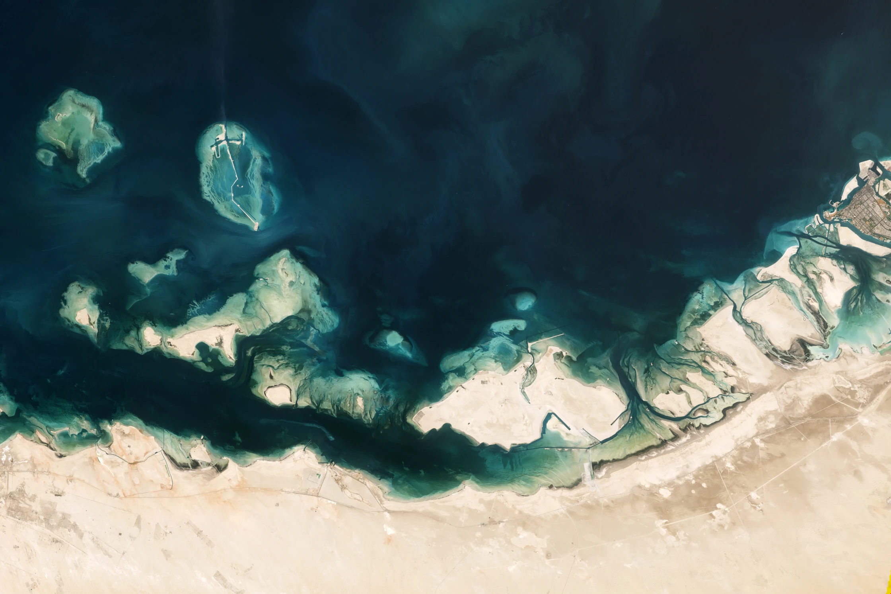

Cooling flow
Seawater the plant can draw.
Ocean Modelling, 2023 ↗Steering blue blubber jellyfish away from the Barakah cooling-water intake.
HISTORIC DAILY JELLYFISH LOAD · CITED IN ENEC MENTORING, 30 OCTOBER
Seawater the plant can draw.
Ocean Modelling, 2023 ↗The animal in the ENEC brief.
ENEC challenge statement ↗Slow water. Direction matters.
Nesterov et al. ↗Dredged intake channel.
NMDC marine works ↗
BARAKAH SEA-SURFACE °C · 2003–2019 · SALINITY 44–45 PSU
It can’t beat the water. But it can sense, and it can turn.

FIRST MARINE TRIAL: ZERO CHEMICAL RELEASE. CUES STAY IN THE LAB UNTIL PROVEN.
Four steps, from the alert to a clear intake.
KEEP SCROLLING →It starts with the alert ENEC already has.
Choose a side. Choose sections.
A wall made of air.
Count what clears. Count what comes back.
900 arrivals. The current flips halfway.
fewer reach the intake
more cleared outside
cleared across 11 scenarios
HIGH TIDE V1.0 TRANSPORT MODEL · SEED 42 · NOT CFD
A marine-lab partner and bloom-load data.
The whole operation, running live on our model.
HIGH TIDE V1.0 ENGINE · CUE LAYER IS A HYPOTHESIS · STRUCTURES SCHEMATIC